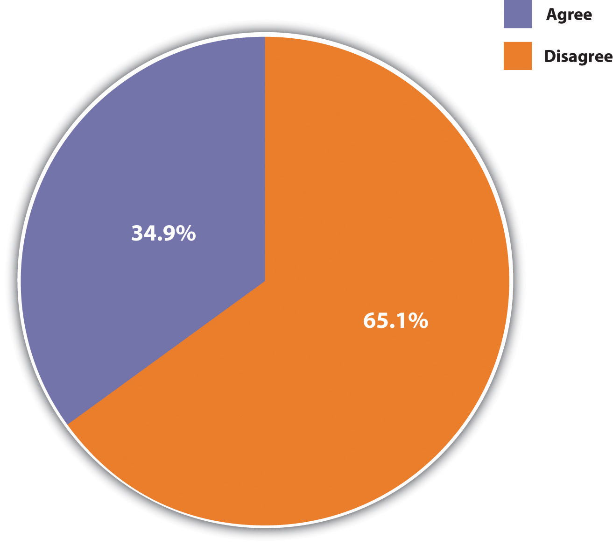

Although the terms sex and gender are sometimes used interchangeably and do in fact complement each other, they nonetheless refer to different aspects of what it means to be a woman or man in any society.
SexThe anatomical and other biological differences between females and males that are determined at the moment of conception and develop in the womb and throughout childhood and adolescence. refers to the anatomical and other biological differences between females and males that are determined at the moment of conception and develop in the womb and throughout childhood and adolescence. Females, of course, have two X chromosomes, while males have one X chromosome and one Y chromosome. From this basic genetic difference spring other biological differences. The first to appear are the different genitals that boys and girls develop in the womb and that the doctor (or midwife) and parents look for when a baby is born (assuming the baby’s sex is not already known from ultrasound or other techniques) so that the momentous announcement, “It’s a boy!” or “It’s a girl!” can be made. The genitalia are called primary sex characteristicsAnatomical and other biological differences between females and males that begin developing in the womb., while the other differences that develop during puberty are called secondary sex characteristicsBiological differences between females and males that emerge during puberty. and stem from hormonal differences between the two sexes. In this difficult period of adolescents’ lives, boys generally acquire deeper voices, more body hair, and more muscles from their flowing testosterone. Girls develop breasts and wider hips and begin menstruating as nature prepares them for possible pregnancy and childbirth. For better or worse, these basic biological differences between the sexes affect many people’s perceptions of what it means to be female or male, as we shall soon discuss.
If sex is a biological concept, then genderThe social and cultural differences a society assigns to people based on their biological sex. is a social concept. It refers to the social and cultural differences a society assigns to people based on their (biological) sex. A related concept, gender rolesA society’s expectations of people’s behavior and attitudes based on whether they are females or males., refers to a society’s expectations of people’s behavior and attitudes based on whether they are females or males. Understood in this way, gender, like race as discussed in Chapter 7 "Deviance, Crime, and Social Control", is a social construction. How we think and behave as females and males is not etched in stone by our biology but rather is a result of how society expects us to think and behave based on what sex we are. As we grow up, we learn these expectations as we develop our gender identityIndividuals’ beliefs about themselves as either females or males., or our beliefs about ourselves as females or males.
These expectations are called femininity and masculinity. FemininityCultural expectations of girls and women, including gentleness and attractiveness. refers to the cultural expectations we have of girls and women, while masculinityCultural expectations of boys and men, including toughness and bravery. refers to the expectations we have of boys and men. A familiar nursery rhyme nicely summarizes these two sets of traits:
What are little boys made of?
Snips and snails,
And puppy dog tails,
That’s what little boys are made of.
What are little girls made of?
Sugar and spice,
And everything nice,
That’s what little girls are made of.
As this nursery rhyme suggests, our traditional notions of femininity and masculinity indicate that we think females and males are fundamentally different from each other. In effect, we think of them as two sides of the same coin of being human. What we traditionally mean by femininity is captured in the adjectives, both positive and negative, we traditionally ascribe to women: gentle, sensitive, nurturing, delicate, graceful, cooperative, decorative, dependent, emotional, passive, and weak. Thus when we say that a girl or woman is very feminine, we have some combination of these traits, usually the positive ones, in mind: she is soft, dainty, pretty, even a bit flighty. What we traditionally mean by masculinity is captured in the adjectives, again both positive and negative, our society traditionally ascribes to men: strong, assertive, brave, active, independent, intelligent, competitive, insensitive, unemotional, and aggressive. When we say that a boy or man is very masculine, we have some combination of these traits in mind: he is tough, strong, and assertive.
These traits might sound like stereotypes of females and males in today’s society, and to some extent they are, but differences between men and women in attitudes and behavior do in fact exist (Aulette, Wittner, & Blakeley, 2009).Aulette, J. R., Wittner, J., & Blakeley, K. (2009). Gendered worlds. New York, NY: Oxford University Press. For example, women cry more often than men do. Men are more physically violent than women. Women take care of children more than men do. Women smile more often than men. Men curse more often than women. When women talk with each other, they are more likely to talk about their personal lives than men are when they talk with each other (Tannen, 2001).Tannen, D. (2001). You just don’t understand: Women and men in conversation. New York, NY: Quill. The two sexes even differ when they hold a cigarette (not that anyone should smoke). When a woman holds a cigarette, she usually has the palm of her cigarette-holding hand facing upward. When a man holds a cigarette, he usually has his palm facing downward.
Sexual orientationPreference for sexual relationships with individuals of the opposite sex, the same sex, or both sexes. refers to a person’s preference for sexual relationships with individuals of the other sex (heterosexuality), one’s own sex (homosexuality), or both sexes (bisexuality). The term also increasingly refers to transgendered individuals, those whose behavior, appearance, and/or gender identity fails to conform to conventional norms. Transgendered individuals include transvestites (those who dress in the clothing of the opposite sex) and transsexuals (those whose gender identity differs from the physiological sex and who sometimes undergo a sex change).
It is difficult to know precisely how many people are gay, lesbian, bisexual, or transgendered. One problem is conceptual. For example, what does it mean to be gay or lesbian? Does one need to actually have sexual relations with a same-sex partner to be considered gay? What if someone is attracted to same-sex partners but does not actually engage in sex with such persons? What if someone identifies as heterosexual but engages in homosexual sex for money (as in certain forms of prostitution) or for power and influence (as in much prison sex)? These conceptual problems make it difficult to determine the extent of homosexuality.
A second problem is empirical. Even if we can settle on a definition of homosexuality, how do we then determine how many people fit this definition? For better or worse, our best evidence of the number of gays and lesbians in the United States comes from surveys of national samples of Americans in which they are asked various questions about their sexuality. Although these are anonymous surveys, obviously at least some individuals may be reluctant to disclose their sexual activity and thoughts to an interviewer. Still, scholars think the estimates from these surveys are fairly accurate but that they probably underestimate by at least a small amount the number of gays and lesbians.
A widely cited survey carried out by researchers at the University of Chicago found that 2.8% of men and 1.4% of women identified themselves as gay/lesbian or bisexual, with greater percentages reporting having had sexual relations with same-sex partners or being attracted to same-sex persons (see Table 11.1 "Prevalence of Homosexuality in the United States"). In the 2008 General Social Survey, 2.2% of men and 3.5% of women identified themselves as gay/lesbian or bisexual. Among individuals having had any sexual partners since turning 18, 2.2% of men reported having had at least some male partners, while 4.6% of women reported having had at least some female partners. Although precise numbers must remain unknown, it seems fair to say that between about 2% and 5% of Americans are gay/lesbian or bisexual.
Table 11.1 Prevalence of Homosexuality in the United States
| Activity, attraction, or identity | Men (%) | Women (%) |
|---|---|---|
| Find same-sex sexual relations appealing | 4.5 | 5.6 |
| Attracted to people of same sex | 6.2 | 4.4 |
| Identify as gay or bisexual | 2.8 | 1.4 |
| At least one sex partner of same sex during past year among those sexually active | 2.7 | 1.3 |
| At least one sex partner of same sex since turning 18 | 4.9 | 4.1 |
Source: Data from Laumann, E. O., Gagnon, J. H., Michael, R. T., & Michaels, S. (1994). The social organization of sexuality. Chicago, IL: University of Chicago Press.
If it is difficult to determine the number of people who are gay/lesbian or bisexual, it is even more difficult to determine why some people have this sexual orientation while most do not have it. Scholars disagree on the “causes” of sexual orientation (Engle, McFalls, Gallagher, & Curtis, 2006; Sheldon, Pfeffer, Jayaratne, Feldbaum, & Petty, 2007).Engle, M. J., McFalls, J. A., Jr., Gallagher, B. J., III, & Curtis, K. (2006). The attitudes of American sociologists toward causal theories of male homosexuality. The American Sociologist, 37(1), 68–67; Sheldon, J. P., Pfeffer, C. A., Jayaratne, T. E., Feldbaum, M., & Petty, E. M. (2007). Beliefs about the etiology of homosexuality and about the ramifications of discovering its possible genetic origin. Journal of Homosexuality, 52(3/4), 111–150. Some scholars attribute it to unknown biological factor(s) over which individuals have no control, just as individuals do not decide whether they are left-handed or right-handed. Supporting this view, many gays say they realized they were gay during adolescence, just as straights would say they realized they were straight during their own adolescence. Other scholars say that sexual orientation is at least partly influenced by cultural norms, so that individuals are more likely to identify as gay or straight depending on the cultural views of sexual orientation into which they are socialized as they grow up. At best, perhaps all we can say is that sexual orientation stems from a complex mix of biological and cultural factors that remain to be determined.
What accounts for differences in female and male behavior and attitudes? Do the biological differences between the sexes account for other differences? Or do these latter differences stem, as most sociologists think, from cultural expectations and from differences in the ways in which the sexes are socialized? These are critical questions, for they ask whether the differences between boys and girls and women and men stem more from biology or from society. As Chapter 2 "Eye on Society: Doing Sociological Research" pointed out, biological explanations for human behavior implicitly support the status quo. If we think behavioral and other differences between the sexes are due primarily to their respective biological makeups, we are saying that these differences are inevitable or nearly so and that any attempt to change them goes against biology and will likely fail.
As an example, consider the obvious biological fact that women bear and nurse children and men do not. Couple this with the common view that women are also more gentle and nurturing than men, and we end up with a “biological recipe” for women to be the primary caretakers of children. Many people think this means women are therefore much better suited than men to take care of children once they are born, and that the family might be harmed if mothers work outside the home or if fathers are the primary caretakers. Figure 11.1 "Belief That Women Should Stay at Home" shows that more than one-third of the public agrees that “it is much better for everyone involved if the man is the achiever outside the home and the woman takes care of the home and family.” To the extent this belief exists, women may not want to work outside the home or, if they choose to do so, they face difficulties from employers, family, and friends. Conversely, men may not even think about wanting to stay at home and may themselves face difficulties from employees, family, and friends if they want to do so. A belief in a strong biological basis for differences between women and men implies, then, that there is little we can or should do to change these differences. It implies that “anatomy is destiny,” and destiny is, of course, by definition inevitable.
Figure 11.1 Belief That Women Should Stay at Home
Agreement or disagreement with statement that “it is much better for everyone involved if the man is the achiever outside the home and the woman takes care of the home and family.”
Source: Data from General Social Survey, 2008.
This implication makes it essential to understand the extent to which gender differences do, in fact, stem from biological differences between the sexes or, instead, stem from cultural and social influences. If biology is paramount, then gender differences are perhaps inevitable and the status quo will remain. If culture and social influences matter much more than biology, then gender differences can change and the status quo may give way. With this backdrop in mind, let’s turn to the biological evidence for behavioral and other differences between the sexes and then examine the evidence for their social and cultural roots.
Several biological explanations for gender roles exist, and we discuss two of the most important ones here. One explanation is from the related fields of sociobiology (see Chapter 2 "Eye on Society: Doing Sociological Research") and evolutionary psychology (Workman & Reader, 2009)Workman, L., & Reader, W. (2009). Evolutionary psychology (2nd ed.). New York, NY: Cambridge University Press. and argues an evolutionary basis for traditional gender roles.
Scholars advocating this view reason as follows (Barash, 2007; Thornhill & Palmer, 2000).Barash, D. P. (2007). Natural selections: Selfish altruists, honest liars, and other realities of evolution. New York, NY: Bellevue Literary Press; Thornhill, R., & Palmer, C. T. (2000). A natural history of rape: Biological bases of sexual coercion. Cambridge, MA: MIT Press. In prehistoric societies, few social roles existed. A major role centered on relieving hunger by hunting or gathering food. The other major role centered on bearing and nursing children. Because only women could perform this role, they were also the primary caretakers for children for several years after birth. And because women were frequently pregnant, their roles as mothers confined them to the home for most of their adulthood. Meanwhile, men were better suited than women for hunting because they were stronger and quicker than women. In prehistoric societies, then, biology was indeed destiny: for biological reasons, men in effect worked outside the home (hunted), while women stayed at home with their children.
Evolutionary reasons also explain why men are more violent than women. In prehistoric times, men who were more willing to commit violence against and even kill other men would “win out” in the competition for female mates. They thus were more likely than less violent men to produce offspring, who would then carry these males’ genetic violent tendencies. By the same token, men who were prone to rape women were more likely to produce offspring, who would then carry these males’ “rape genes.” This early process guaranteed that rape tendencies would be biologically transmitted and thus provided a biological basis for the amount of rape that occurs today.
If the human race evolved along these lines, sociobiologists and evolutionary psychologists continue, natural selection favored those societies where men were stronger, braver, and more aggressive and where women were more fertile and nurturing. Such traits over the millennia became fairly instinctual, meaning that men’s and women’s biological natures evolved differently. Men became, by nature, more assertive, daring, and violent than women, and women are, by nature, more gentle, nurturing, and maternal than men. To the extent this is true, these scholars add, traditional gender roles for women and men make sense from an evolutionary standpoint, and attempts to change them go against the sexes’ biological natures. This in turn implies that existing gender inequality must continue because it is rooted in biology. As the title of a book presenting the evolutionary psychology argument summarizes this implication, “biology at work: rethinking sexual equality” (Browne, 2002).Browne, K. (2002). Biology at work: Rethinking sexual equality. New Brunswick, NJ: Rutgers University Press.
Critics challenge the evolutionary explanation on several grounds (Hurley, 2007; Buller, 2006; Begley, 2009).Hurley, S. (2007). Sex and the social construction of gender: Can feminism and evolutionary psychology be reconciled? In J. Browne (Ed.), The future of gender (pp. 98–115). New York, NY: Cambridge University Press; Buller, D. J. (2006). Adapting minds: Evolutionary psychology and the persistent quest for human nature. Cambridge, MA: MIT Press; Begley, S. (2009, June 29). Don’t blame the caveman. Newsweek 52–62. First, much greater gender variation in behavior and attitudes existed in prehistoric times than the evolutionary explanation assumes. Second, even if biological differences did influence gender roles in prehistoric times, these differences are largely irrelevant in today’s world, in which, for example, physical strength is not necessary for survival. Third, human environments throughout the millennia have simply been too diverse to permit the simple, straightforward biological development that the evolutionary explanation assumes. Fourth, evolutionary arguments implicitly justify existing gender inequality by implying the need to confine women and men to their traditional roles.
Recent anthropological evidence also challenges the evolutionary argument that men’s tendency to commit violence, including rape, was biologically transmitted. This evidence instead finds that violent men have trouble finding female mates who would want them and that the female mates they find and the children they produce are often killed by rivals to the men. The recent evidence also finds those rapists’ children are often abandoned and then die. As one anthropologist summarizes the rape evidence, “The likelihood that rape is an evolved adaptation [is] extremely low. It just wouldn’t have made sense for men in the [prehistoric epoch] to use rape as a reproductive strategy, so the argument that it’s preprogrammed into us doesn’t hold up” (Begley, 2009, p. 54).Begley, S. (2009, June 29). Don’t blame the caveman. Newsweek 52–62.
A second biological explanation for traditional gender roles centers on hormones and specifically on testosterone, the so-called male hormone. One of the most important differences between boys and girls and men and women in the United States and many other societies is their level of aggression. Simply put, males are much more physically aggressive than females and in the United States commit about 85%–90% of all violent crimes (see Chapter 7 "Deviance, Crime, and Social Control"). Why is this so? As Chapter 7 "Deviance, Crime, and Social Control" pointed out, this gender difference is often attributed to males’ higher levels of testosterone (Mazur, 2009).Mazur, A. (2009). Testosterone and violence among young men. In A. Walsh & K. M. Beaver (Eds.), Biosocial criminology: New directions in theory and research (pp. 190–204). New York, NY: Routledge.
To see whether testosterone does indeed raise aggression, researchers typically assess whether males with higher testosterone levels are more aggressive than those with lower testosterone levels. Several studies find that this is indeed the case. For example, a widely cited study of Vietnam-era male veterans found that those with higher levels of testosterone had engaged in more violent behavior (Booth & Osgood, 1993).Booth, A., & Osgood, D. W. (1993). The influence of testosterone on deviance in adulthood: Assessing and explaining the relationship. Criminology, 31(1), 93–117. However, this correlation does not necessarily mean that their testosterone increased their violence: as has been found in various animal species, it is also possible that their violence increased their testosterone. Because studies of human males can’t for ethical and practical reasons manipulate their testosterone levels, the exact meaning of the results from these testosterone-aggression studies must remain unclear, according to a review sponsored by the National Academy of Sciences (Miczek, Mirsky, Carey, DeBold, & Raine, 1994).Miczek, K. A., Mirsky, A. F., Carey, G., DeBold, J., & Raine, A. (1994). An overview of biological influences on violent behavior. In J. Albert, J. Reiss, K. A. Miczek, & J. A. Roth (Eds.), Understanding and preventing violence: Biobehavioral influences (Vol. 2, pp. 1–20). Washington, DC: National Academy Press.
Another line of research on the biological basis for sex differences in aggression involves children, including some as young as ages 1 or 2, in various situations (Card, Stucky, Sawalani, & Little, 2008).Card, N. A., Stucky, B. D., Sawalani, G. M., & Little, T. D. (2008). Direct and indirect aggression during childhood and adolescence: A meta-analytic review of gender differences, intercorrelations, and relations to maladjustment. Child Development, 79(5), 1185–1229. doi:10.1111/j.1467-8624.2008.01184.x They might be playing with each other, interacting with adults, or writing down solutions to hypothetical scenarios given to them by a researcher. In most of these studies, boys are more physically aggressive in thought or deed than girls, even at a very young age. Other studies are more experimental in nature. In one type of study, a toddler will be playing with a toy, only to have it removed by an adult. Boys typically tend to look angry and try to grab the toy back, while girls tend to just sit there and whimper. Because these gender differences in aggression are found at very young ages, researchers often say they must have some biological basis. However, critics of this line of research counter that even young children have already been socialized along gender lines (Begley, 2009; Eliot, 2009),Begley, S. (2009, September 14). Pink brain, blue brain: Claims of sex differences fall apart. Newsweek 28; Eliot, L. (2009). Pink brain, blue brain: How small differences grow into troublesome gaps—and what we can do about it. Boston, MA: Houghton Mifflin Harcourt. a point to which we return later. To the extent this is true, gender differences in children’s aggression may simply reflect socialization and not biology.
In sum, biological evidence for gender differences certainly exists, but its interpretation remains very controversial. It must be weighed against the evidence, to which we next turn, of cultural variations in the experience of gender and of socialization differences by gender. One thing is clear: to the extent we accept biological explanations for gender, we imply that existing gender differences and gender inequality must continue to exist. This implication prompts many social scientists to be quite critical of the biological viewpoint. As Linda L. Lindsey (2011, p. 52)Lindsey, L. L. (2011). Gender roles: A sociological perspective (5th ed.). Upper Saddle River, NJ: Prentice Hall. notes, “Biological arguments are consistently drawn upon to justify gender inequality and the continued oppression of women.” In contrast, cultural and social explanations of gender differences and gender inequality promise some hope for change. Let’s examine the evidence for these explanations.
Some of the most compelling evidence against a strong biological determination of gender roles comes from anthropologists, whose work on preindustrial societies demonstrates some striking gender variation from one culture to another. This variation underscores the impact of culture on how females and males think and behave.
Margaret Mead (1935)Mead, M. (1935). Sex and temperament in three primitive societies. New York, NY: William Morrow. was one of the first anthropologists to study cultural differences in gender. In New Guinea she found three tribes—the Arapesh, the Mundugumor, and the Tchambuli—whose gender roles differed dramatically. In the Arapesh both sexes were gentle and nurturing. Both women and men spent much time with their children in a loving way and exhibited what we would normally call maternal behavior. In the Arapesh, then, different gender roles did not exist, and in fact, both sexes conformed to what Americans would normally call the female gender role.
Margaret Mead made important contributions to the anthropological study of gender. Her work suggested that culture dramatically influences how females and males behave and that gender is rooted much more in culture than in biology.
Source: Photo courtesy of U.S. Library of Congress, http://loc.gov/pictures/resource/cph.3c20226.
The situation was the reverse among the Mundugumor. Here both men and women were fierce, competitive, and violent. Both sexes seemed to almost dislike children and often physically punished them. In the Mundugumor society, then, different gender roles also did not exist, as both sexes conformed to what we Americans would normally call the male gender role.
In the Tchambuli, Mead finally found a tribe where different gender roles did exist. One sex was the dominant, efficient, assertive one and showed leadership in tribal affairs, while the other sex liked to dress up in frilly clothes, wear makeup, and even giggle a lot. Here, then, Mead found a society with gender roles similar to those found in the United States, but with a surprising twist. In the Tchambuli, women were the dominant, assertive sex that showed leadership in tribal affairs, while men were the ones wearing frilly clothes and makeup.
Mead’s research caused a firestorm in scholarly circles, as it challenged the biological view on gender that was still very popular when she went to New Guinea. In recent years, Mead’s findings have been challenged by other anthropologists. Among other things, they argue that she probably painted an overly simplistic picture of gender roles in her three societies (Scheper-Hughes, 1987).Scheper-Hughes, N. (1987). The Margaret Mead controversy: Culture, biology and anthropological inquiry. In H. Applebaum (Ed.), Perspectives in cultural anthropology (pp. 443–454). Albany, NY: State University of New York Press. Other anthropologists defend Mead’s work and note that much subsequent research has found that gender-linked attitudes and behavior do differ widely from one culture to another (Morgan, 1989).Morgan, S. (Ed.). (1989). Gender and anthropology: Critical reviews for research and teaching. Washington, DC: American Anthropological Association. If so, they say, the impact of culture on what it means to be a female or male cannot be ignored.
Extensive evidence of this impact comes from anthropologist George Murdock, who created the Standard Cross-Cultural Sample of almost 200 preindustrial societies studied by anthropologists. Murdock (1937)Murdock, G. (1937). Comparative data on the division of labor by sex. Social Forces, 15, 551–553. found that some tasks in these societies, such as hunting and trapping, are almost always done by men, while other tasks, such as cooking and fetching water, are almost always done by women. These patterns provide evidence for the evolutionary argument presented earlier, as they probably stem from the biological differences between the sexes. Even so there were at least some societies in which women hunted and in which men cooked and fetched water.
More importantly, Murdock found much greater gender variation in several of the other tasks he studied, including planting crops, milking, and generating fires. Men primarily performed these tasks in some societies, women primarily performed them in other societies, and in still other societies both sexes performed them equally. Figure 11.2 "Gender Responsibility for Weaving" shows the gender responsibility for yet another task, weaving. Women are the primary weavers in about 61% of the societies that do weaving, men are the primary weavers in 32%, and both sexes do the weaving in 7% of the societies. Murdock’s findings illustrate how gender roles differ from one culture to another and imply they are not biologically determined.
Figure 11.2 Gender Responsibility for Weaving

Source: Data from Standard Cross-Cultural Sample.
Anthropologists since Mead and Murdock have continued to investigate cultural differences in gender. Some of their most interesting findings concern gender and sexuality (Morgan, 1989; Brettell & Sargent, 2009).Morgan, S. (Ed.). (1989). Gender and anthropology: Critical reviews for research and teaching. Washington, DC: American Anthropological Association; Brettell, C. B., & Sargent, C. F. (Eds.). (2009). Gender in cross-cultural perspective (5th ed.). Upper Saddle River, NJ: Prentice Hall. Although all societies distinguish “femaleness” and “maleness,” additional gender categories exist in some societies. The Native Americans known as the Mohave, for example, recognize four genders: a woman, a woman who acts like a man, a man, and a man who acts like a woman. In some societies, a third, intermediary gender category is recognized. Anthropologists call this category the berdache, who is usually a man who takes on a woman’s role. This intermediary category combines aspects of both femininity and masculinity of the society in which it is found and is thus considered an androgynousContaining aspects of both femaleness and maleness, or of both femininity and masculinity. gender. Although some people in this category are born as intersexed individuals (formerly known as hermaphrodites), meaning they have genitalia of both sexes, many are born biologically as one sex or the other but adopt an androgynous identity.
An example of this intermediary gender category may be found in India, where the hirja role involves males who wear women’s clothing and identify as women (Reddy, 2006).Reddy, G. (2006). With respect to sex: Negotiating Hirja identity in South India. New Delhi, India: Yoda. The hirja role is an important part of Hindu mythology, in which androgynous figures play key roles both as humans and as gods. Today people identified by themselves and others as hirjas continue to play an important role in Hindu practices and in Indian cultural life in general. Serena Nanda (1997, pp. 200–201)Nanda, S. (1997). Neither man nor woman: The Hirjas of India. In C. B. Brettell & C. F. Sargent (Eds.), Gender in cross-cultural perspective (2nd ed., pp. 198–201). Upper Saddle River, NJ: Prentice Hall. calls hirjas “human beings who are neither man nor woman” and says they are thought of as “special, sacred beings” even though they are sometimes ridiculed and abused.
Anthropologists have found another androgynous gender composed of women warriors in 33 Native American groups in North America. Walter L. Williams (1997)Williams, W. L. (1997). Amazons of America: Female gender variance. In C. B. Brettell & C. F. Sargent (Eds.), Gender in cross-cultural perspective (2nd ed., pp. 202–213). Upper Saddle River, NJ: Prentice Hall. calls these women “amazons” and notes that they dress like men and sometimes even marry women. In some tribes girls exhibit such “masculine” characteristics from childhood, while in others they may be recruited into “amazonhood.” In the Kaska Indians, for example, a married couple with too many daughters would select one to “be like a man.” When she was about 5 years of age, her parents would begin to dress her like a boy and have her do male tasks. Eventually she would grow up to become a hunter.
The androgynous genders found by anthropologists remind us that gender is a social construction and not just a biological fact. If culture does affect gender roles, socialization is the process through which culture has this effect. What we experience as girls and boys strongly influences how we develop as women and men in terms of behavior and attitudes. To illustrate this important dimension of gender, let’s turn to the evidence on socialization.
Chapter 3 "Culture" identified several agents of socialization, including the family, peers, schools, the mass media, and religion. While that chapter’s discussion focused on these agents’ impact on socialization in general, ample evidence of their impact on gender-role socialization also exists. Such socialization helps boys and girls develop their gender identity (Andersen & Hysock, 2009).Andersen, M., & Hysock, D. (2009). Thinking about women: Sociological perspectives on sex and gender (8th ed.). Boston, MA: Allyn & Bacon.
Socialization into gender roles begins in infancy, as almost from the moment of birth parents begin to socialize their children as boys or girls without even knowing it (Begley, 2009; Eliot, 2009).Begley, S. (2009, September 14). Pink brain, blue brain: Claims of sex differences fall apart. Newsweek 28; Eliot, L. (2009). Pink brain, blue brain: How small differences grow into troublesome gaps—and what we can do about it. Boston, MA: Houghton Mifflin Harcourt. Many studies document this process (Lindsey, 2011).Lindsey, L. L. (2011). Gender roles: A sociological perspective (5th ed.). Upper Saddle River, NJ: Prentice Hall. Parents commonly describe their infant daughters as pretty, soft, and delicate and their infant sons as strong, active, and alert, even though neutral observers find no such gender differences among infants when they do not know the infants’ sex. From infancy on, parents play with and otherwise interact with their daughters and sons differently. They play more roughly with their sons—for example, by throwing them up in the air or by gently wrestling with them—and more quietly with their daughters. When their infant or toddler daughters cry, they warmly comfort them, but they tend to let their sons cry longer and to comfort them less. They give their girls dolls to play with and their boys “action figures” and toy guns. While these gender differences in socialization are probably smaller now than a generation ago, they certainly continue to exist. Go into a large toy store and you will see pink aisles of dolls and cooking sets and blue aisles of action figures, toy guns, and related items.
Peer influences also encourage gender socialization. As they reach school age, children begin to play different games based on their gender (see the “Sociology Making a Difference” box). Boys tend to play sports and other competitive team games governed by inflexible rules and relatively large numbers of roles, while girls tend to play smaller, cooperative games such as hopscotch and jumping rope with fewer and more flexible rules. Although girls are much more involved in sports now than a generation ago, these gender differences in their play as youngsters persist and continue to reinforce gender roles. For example, they encourage competitiveness in boys and cooperation and trust among girls. Boys who are not competitive risk being called “sissy” or other words by their peers. The patterns we see in adult males and females thus have their roots in their play as young children (King, Miles, & Kniska, 1991).King, W. C., Jr., Miles, E. W., & Kniska, J. (1991). Boys will be boys (and girls will be girls): The attribution of gender role stereotypes in a gaming situation. Sex Roles, 25, 607–623.
Gender Differences in Children’s Play and Games
In considering the debate, discussed in the text, between biology and sociology over the origins of gender roles, some widely cited studies by sociologists over gender differences in children’s play and games provide important evidence for the importance of socialization.
Janet Lever (1978)Lever, J. (1978). Sex differences in the complexity of children’s play and games. American Sociological Review, 43, 471–483. studied fifth-grade children in three different communities in Connecticut. She watched them play and otherwise interact in school and also had the children keep diaries of their play and games outside school. One of her central aims was to determine how complex the two sexes’ play and games were in terms of such factors as number of rules, specialization of roles, and size of the group playing. In all of these respects, Lever found that boys’ play and games were typically more complex than girls’ play and games. She attributed these differences to socialization by parents, teachers, and other adults and argued that the complexity of boys’ play and games helped them to be better able than girls to learn important social skills such as dealing with rules and coordinating actions to achieve goals.
Meanwhile, Barrie Thorne (1993)Thorne, B. (1993). Gender play: Girls and boys in school. New Brunswick, NJ: Rutgers University Press. spent many months in two different working-class communities in California and Michigan observing fourth and fifth graders sit in class and lunchrooms and play on the school playgrounds. Most children were white, but several were African American or Latino. As you might expect, the girls and boys she observed usually played separately from each other, and the one-sex groups in which they played were very important for the development of their gender identity, with boys tending to play team sports and other competitive games and girls tending to play cooperative games such as jump rope. These differences led Thorne to conclude that gender-role socialization stems not only from practices by adults but also from the children’s own activities without adult involvement. When boys and girls did interact, it was often “girls against the boys” or vice versa in classroom spelling contests and in games such as tag. Thorne concluded that these “us against them” contests helped the children learn that boys and girls are two different and antagonistic sexes and that gender itself is antagonistic, even if there were also moments when both sexes interacted on the playground in more relaxed, noncompetitive situations. Boys also tended to disrupt girls’ games more than the reverse and in this manner both exerted and learned dominance over females. In all of these ways, children were not just the passive recipients of gender-role socialization from adults (their teachers), but they also played an active role in ensuring that such socialization occurred.
The studies by Lever and Thorne were among the first to emphasize the importance of children’s play and peer relationships for gender socialization. They also called attention to the importance of the traits and values learned through such socialization for outcomes later in life. The rise in team sports opportunities for girls in the years since Lever and Thorne did their research is a welcome development that addresses the concerns expressed in their studies, but young children continue to play in the ways that Lever and Thorne found. To the extent children’s play has the consequences just listed, and to the extent these consequences impede full gender inequality, these sociological studies suggest the need for teachers, parents, and other adults to help organize children’s play that is more egalitarian along the lines discussed by Lever, Thorne, and other scholars. In this way, their sociological work has helped to make a difference and promises to continue to do so.
School is yet another agent of gender socialization (Klein, 2007).Klein, S. S. (Ed.). (2007). Handbook for achieving gender equity through education (2nd ed.). Mahwah, NJ: Lawrence Erlbaum Associates. First of all, school playgrounds provide a location for the gender-linked play activities just described to occur. Second, and perhaps more important, teachers at all levels treat their female and male students differently in subtle ways of which they are probably not aware. They tend to call on boys more often to answer questions in class and to praise them more when they give the right answer. They also give boys more feedback about their assignments and other school work (Sadker & Sadker, 1994).Sadker, M., & Sadker, D. (1994). Failing at fairness: How America’s schools cheat girls. New York, NY: Charles Scribner’s. At all grade levels, many textbooks and other books still portray people in gender-stereotyped ways. It is true that the newer books do less of this than older ones, but the newer books still contain some stereotypes, and the older books are still used in many schools, especially those that cannot afford to buy newer volumes.
Gender socialization also occurs through the mass media (Dow & Wood, 2006).Dow, B. J., & Wood, J. T. (Eds.). (2006). The SAGE handbook of gender and communication. Thousand Oaks, CA: Sage. On children’s television shows, the major characters are male. On Nickelodeon, for example, the very popular SpongeBob SquarePants is a male, as are his pet snail, Gary; his best friend, Patrick Star; their neighbor, Squidward Tentacles; and SpongeBob’s employer, Eugene Crabs. Of the major characters in Bikini Bottom, only Sandy Cheeks is a female. For all its virtues, Sesame Street features Bert, Ernie, Cookie Monster, and other male characters. Most of the Muppets are males, and the main female character, Miss Piggy, depicted as vain and jealous, is hardly an admirable female role model. As for adults’ prime-time television, more men than women continue to fill more major roles in weekly shows, despite notable women’s roles in shows such as The Good Wife and Grey’s Anatomy. Women are also often portrayed as unintelligent or frivolous individuals who are there more for their looks than for anything else. Television commercials reinforce this image (Yoder, Christopher, & Holmes, 2008).Yoder, J. D., Christopher, J., & Holmes, J. D. (2008). Are television commercials still achievement scripts for women? Psychology of Women Quarterly, 32(3), 303–311. doi:10.1111/j.1471-6402.2008.00438.x Cosmetics ads abound, suggesting not only that a major task for women is to look good but also that their sense of self-worth stems from looking good. Other commercials show women becoming ecstatic over achieving a clean floor or sparkling laundry. Judging from the world of television commercials, then, women’s chief goals in life are to look good and to have a clean house. At the same time, men’s chief goals, judging from many commercials, are to drink beer and drive cars.
Women’s and men’s magazines reinforce these gender images (Milillo, 2008).Milillo, D. (2008). Sexuality sells: A content analysis of lesbian and heterosexual women’s bodies in magazine advertisements. Journal of Lesbian Studies, 12(4), 381–392. Most of the magazines intended for teenaged girls and adult women are filled with pictures of thin, beautiful models, advice on dieting, cosmetics ads, and articles on how to win and please your man. Conversely, the magazines intended for teenaged boys and men are filled with ads and articles on cars and sports, advice on how to succeed in careers and other endeavors, and pictures of thin, beautiful (and sometimes nude) women. These magazine images again suggest that women’s chief goals are to look good and to please men and that men’s chief goals are to succeed, win over women, and live life in the fast lane.
Another agent of socialization, religion, also contributes to traditional gender stereotypes. Many traditional interpretations of the Bible yield the message that women are subservient to men (Tanenbaum, 2009).Tanenbaum, L. (2009). Taking back God: American women rising up for religious equality. New York, NY: Farrar, Straus and Giroux. This message begins in Genesis, where the first human is Adam, and Eve was made from one of his ribs. The major figures in the rest of the Bible are men, and women are for the most part depicted as wives, mothers, temptresses, and prostitutes; they are praised for their roles as wives and mothers and condemned for their other roles. More generally, women are constantly depicted as the property of men. The Ten Commandments includes a neighbor’s wife with his house, ox, and other objects as things not to be coveted (Exodus 20:17), and many biblical passages say explicitly that women belong to men, such as this one from the New Testament:
Wives be subject to your husbands, as to the Lord. For the husband is the head of the wife as Christ is the head of the Church. As the Church is subject to Christ, so let wives also be subject in everything to their husbands. (Ephesians 5:22–24)
Several passages in the Old Testament justify the rape and murder of women and girls. The Koran, the sacred book of Islam, also contains passages asserting the subordinate role of women (Mayer, 2009).Mayer, A. E. (2009). Review of “Women, the Koran and international human rights law: The experience of Pakistan” [Book review]. Human Rights Quarterly, 31(4), 1155–1158.
This discussion suggests that religious people should believe in traditional gender views more than less religious people, and research confirms this relationship (Morgan, 1988).Morgan, M. (1988). The impact of religion on gender-role attitudes. Psychology of Women Quarterly, 11, 301–310. To illustrate this, Figure 11.3 "Frequency of Prayer and Acceptance of Traditional Gender Roles in the Family" shows the relationship in the General Social Survey between frequency of prayer and the view (seen first in Figure 11.1 "Belief That Women Should Stay at Home") that “it is much better for everyone involved if the man is the achiever outside the home and the woman takes care of the home and family.” People who pray more often are more likely to accept this traditional view of gender roles.
Figure 11.3 Frequency of Prayer and Acceptance of Traditional Gender Roles in the Family

Percentage agreeing that “it is much better for everyone involved if the man is the achiever outside the home and the woman takes care of the home and family.”
Source: Data from General Social Survey, 2008.
Scholars in many fields continue to debate the relative importance of biology and of culture and socialization for how we behave and think as girls and boys and as women and men. The biological differences between females and males lead many scholars and no doubt much of the public to assume that masculinity and femininity are to a large degree biologically determined or at least influenced. In contrast, anthropologists, sociologists, and other social scientists tend to view gender as a social construction. Even if biology does matter for gender, they say, the significance of culture and socialization should not be underestimated. To the extent that gender is indeed shaped by society and culture, it is possible to change gender and to help bring about a society where both men and women have more opportunity to achieve their full potential.